Booze that matters!
Geek GK64XS
Mechanical keyboard
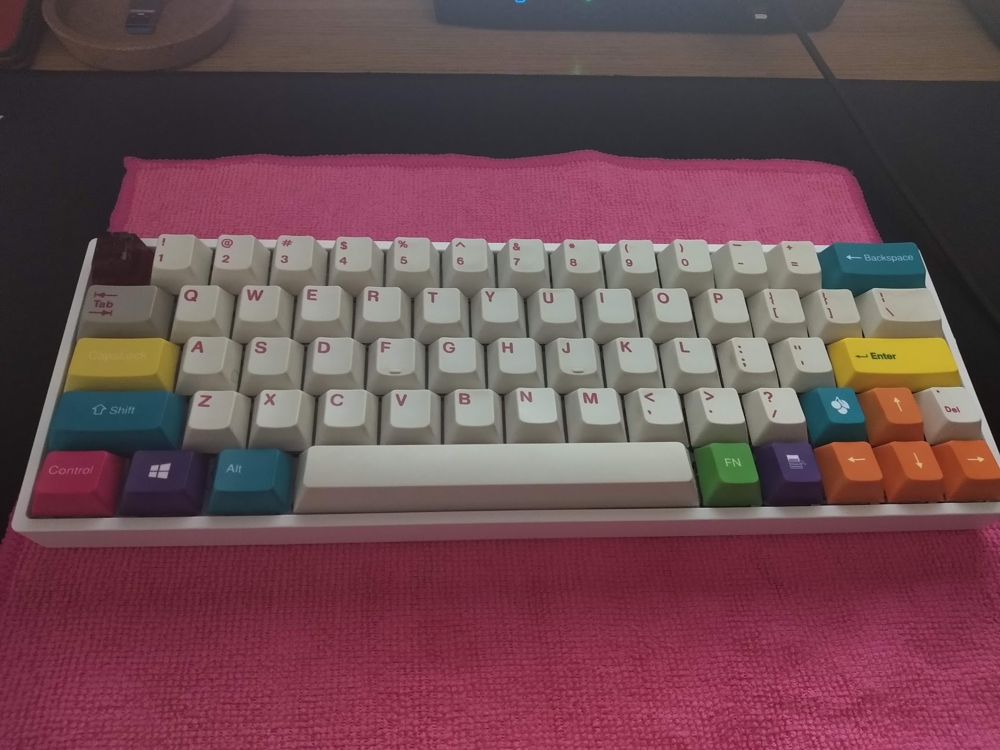
With Gateron yellow switches and enjoyPBT keycaps.
Geek GK64XSLightweight Linux distros
[BunsenLabs Linux Lithium running on a single core Thinkpad x100e - Super sexy...]
See more at my blogAris Hadjistefanou - Turkey: East of the EU
An unbiased and easy-to-read book about our neighboring country with a journalistic look.
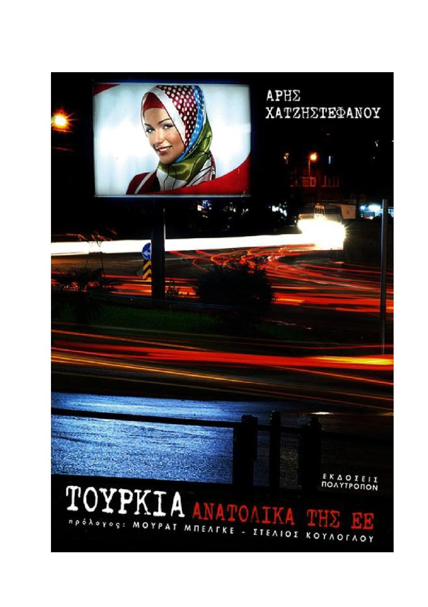
Free ebook from https://info-war.gr/Books
For the quarantine and the coming summer!
* Geert Mak - In Europe: Travels Through the Twentieth Century
* John Hirst - The Shortest History of Europe
* Patrick Leigh Fermor - Mani: Travels in the Southern Peloponnes
* Paul Theroux - The Great Railway Bazaar
* Colin Thubron - Shadow of the Silk Road
Mark Mazower - Dark Continent: Europe's Twentieth Century
The book deals with European history from the end of World War I until the Yugoslav Wars in the 1990s.
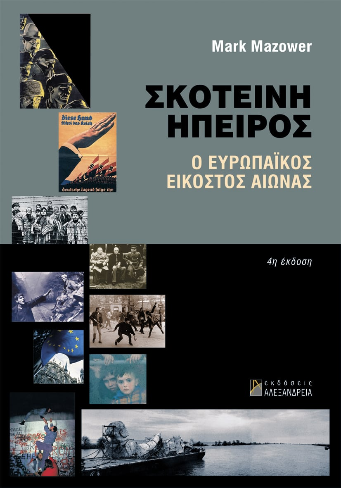
https://alexandria-publ.gr/shop/dark-continent-europes-twentieth-century/Twsbi Diamond 580 AL R
New fountain pen
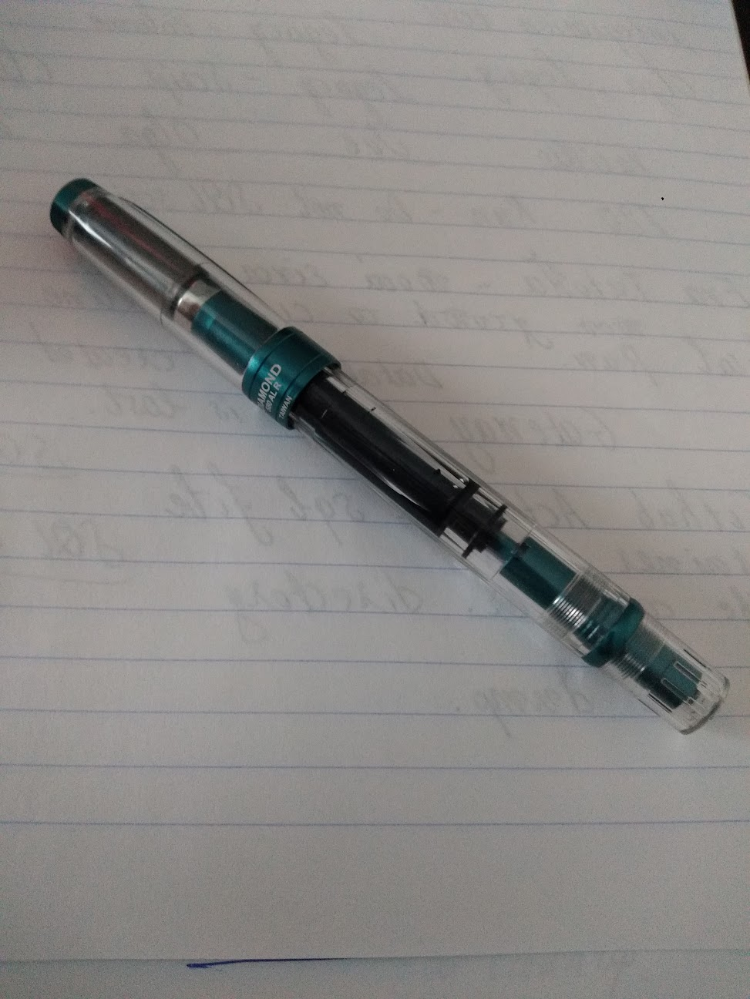
Twsbi Diamond 580 AL R Prussian Blue!
Buy at Pen StoreThinkpad x120e
...with BunsenLabs Lithium

Thinkpad x120e

Το τρίγωνο της θλίψης (Triangle of Sadness)
This is a great film...

A fashion model celebrity couple join an eventful cruise for the super-rich.
Triangle of SadnessΣυνέλευση της Βοστίτσας
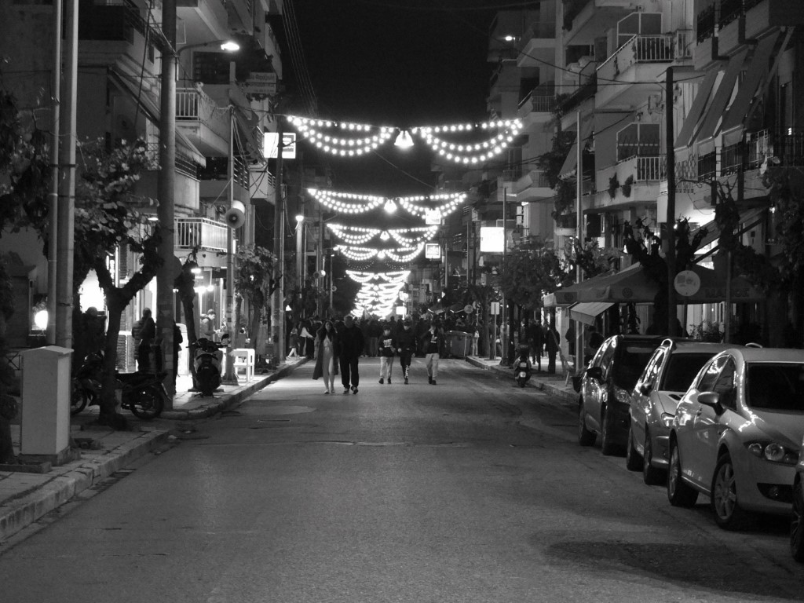


Syros, Cyclades
Aegean Sea

This picture taken in Syros is proof that Cyclades buildings used to be colourful.
https://www.lifo.gr/videos/lifo-picks/o-syndyasmos-toy-leykoy-kai-toy-mple-stis-kyklades-epiblithike-apo-ton-ioanniSifnos, Cyclades
Aegean Sea

Full moon in Sifnos
Geert Mak - Στην Ευρώπη, Ταξίδια στον 20ο αιώνα
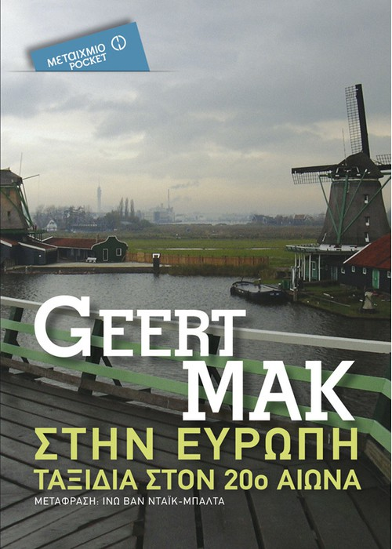
Ένα ιστορικό βιβλίο με ιδιαίτερο ύφος εστιασμένο στους ανθρώπους και λιγότερο σε εξιστόρηση γεγονότων.
The Holdovers
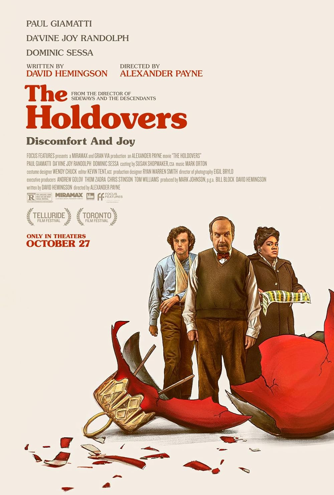
Το καταφύγιο στην Ομόνοια, το ντοκιμαντέρ της Φένιας Παπαδόδημα
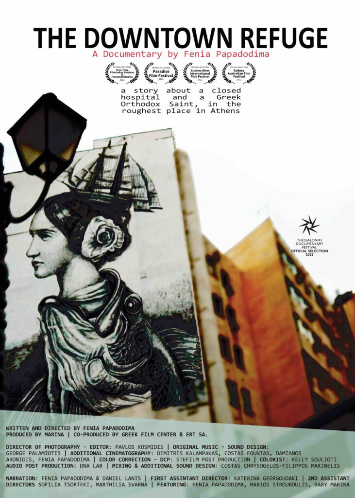
Κάνετε κλικ για να το δείτε στο Dailymotion.
Books
For the coming summer!
* SPQR - Mary Beard
* Χωράει όλη η αρχαιότητα στο ασανσέρ - Θεόδωρος Παπακώστας
* Κάθριν Νίξι - Η εποχή του λυκόφωτος – Η καταστροφή του κλασικού κόσμου από τον χριστιανισμό
Malaga, Spain

Spent a few days in Malaga and loved it. The old town is full of tapas bars, the Alcazaba is worth the climb, and the Picasso Museum is a nice break from the heat. Great mix of beach and city.
Sevilla, Spain
Plaza de Toros

Visited the Plaza de Toros in Seville. Whether or not you agree with bullfighting, the building itself is stunning and the history is fascinating. The whole city has this intense, beautiful energy.
Wikipedia: SevilleΤα ελληνικά νησιά - Lawrence Durrell

Pyrgos, Tinos
Aegean Sea
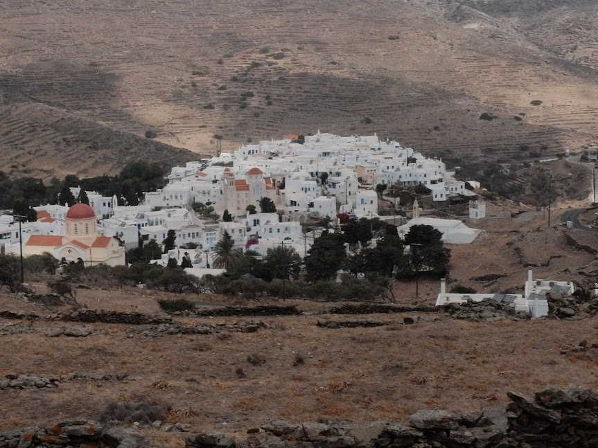
Pyrgos on Tinos is one of those villages where you just stop and stare. Marble workshops everywhere, quiet streets, and a square that feels frozen in time. Definitely my favorite spot on the island.
Wikipedia: TinosΣιταράλωνα
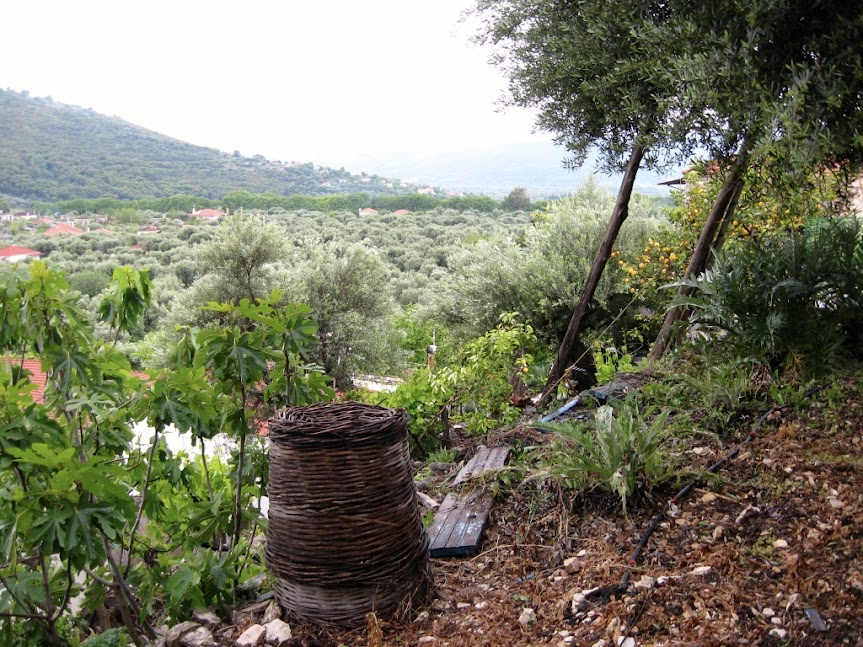
After Hours
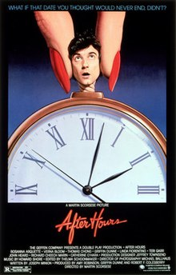
An office worker who experiences a series of misadventures while attempting to make his way home from Manhattan's SoHo district during the night.
Δίδυμοι καταρράκτες Αγ. Σοφίας
Μοκιστιάνος, Θέρμο
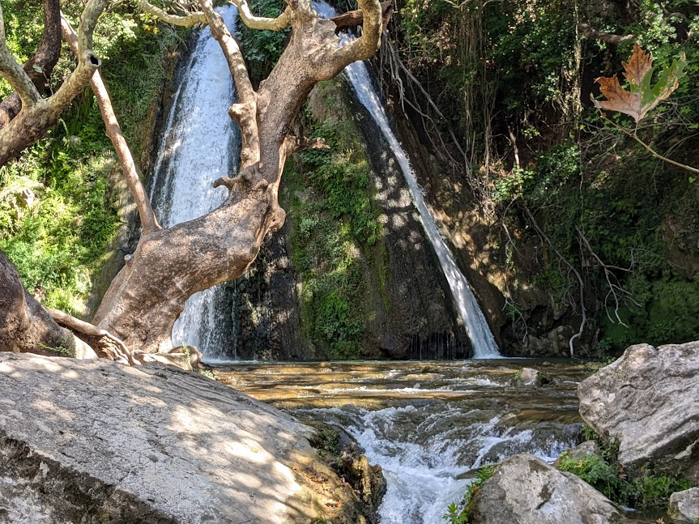
Οι Δίδυμοι Καταρράκτες της Αγίας Σοφίας στον Μοκιστιάνο Θέρμου. Νερό που πέφτει από 20 μέτρα μέσα στο δάσος, σε 700 μέτρα υψόμετρο. Η διαδρομή από τα μονοπάτια αξίζει όσο και οι ίδιοι οι καταρράκτες.
Περισσότερες πληροφορίεςRiomaggiore, Italy
Cinque Terre
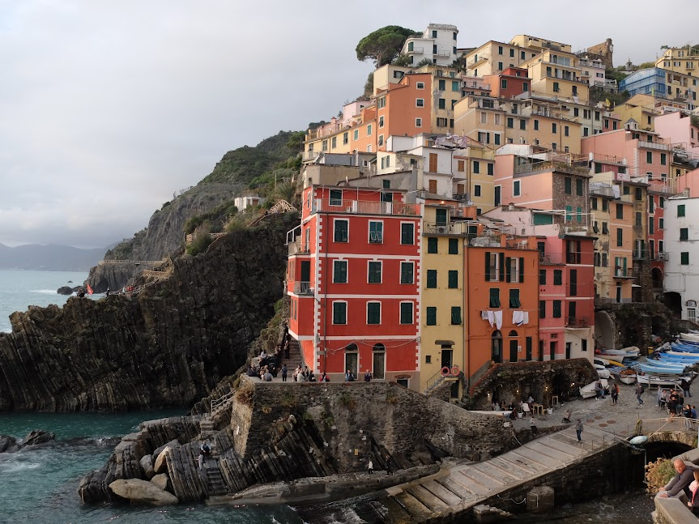
Riomaggiore was my first stop in Cinque Terre and probably my favorite. Colorful houses crammed onto the cliffs, a tiny harbor, and narrow alleys that lead nowhere in the best way.
Ioulida, Kea
Aegean Sea
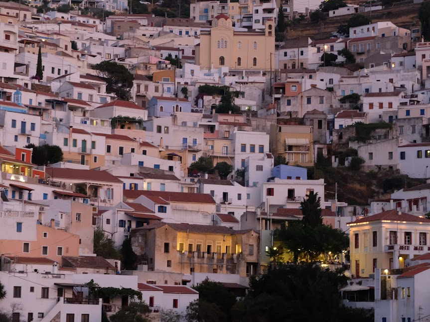
Ioulida, the main town of Kea, is built into the hillside like an amphitheater. Quiet alleys, good tavernas, and the stone lion guarding the place. Perfect for getting lost without a map.
Wikipedia: KeaGolden Bridge - Ba Na Hills, Vietnam

Hoi An, Vietnam
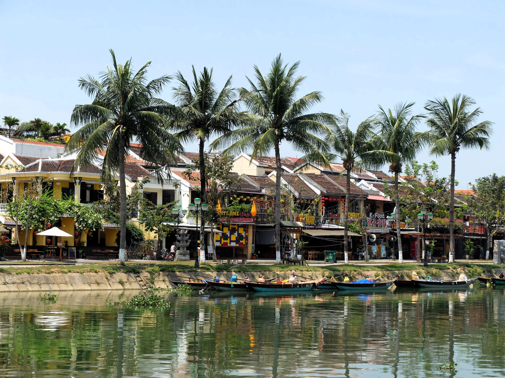
Hoi An at night is something else. Yellow houses, paper lanterns everywhere, and the smell of food from every alley. I mostly walked around, ate too much, and watched the river.
Kedros, Donousa
Lesser Cyclades
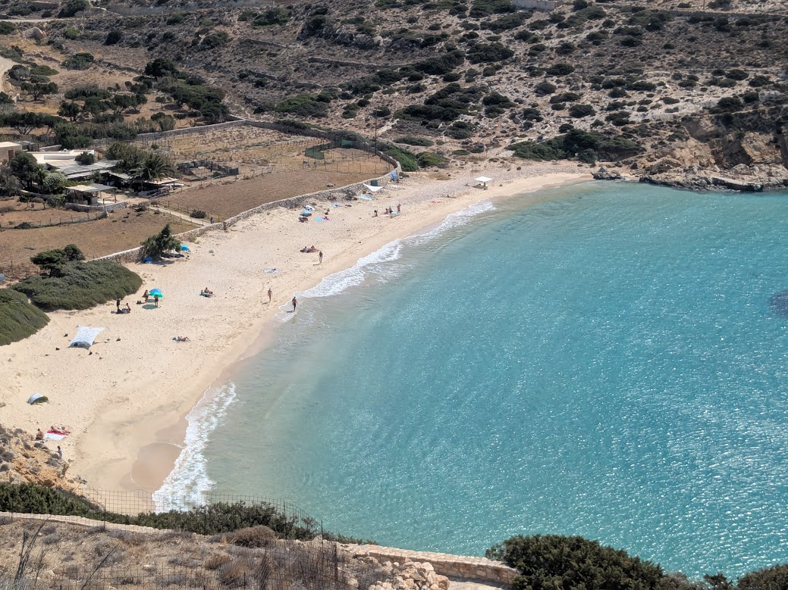
Kedros Beach on Donousa has this shipwreck just sitting in the turquoise water. Crystal clear, no crowds, and a few free campers scattered around. Feels like the Cyclades at their best.
Stavros, Donousa
Main beach of Donousa
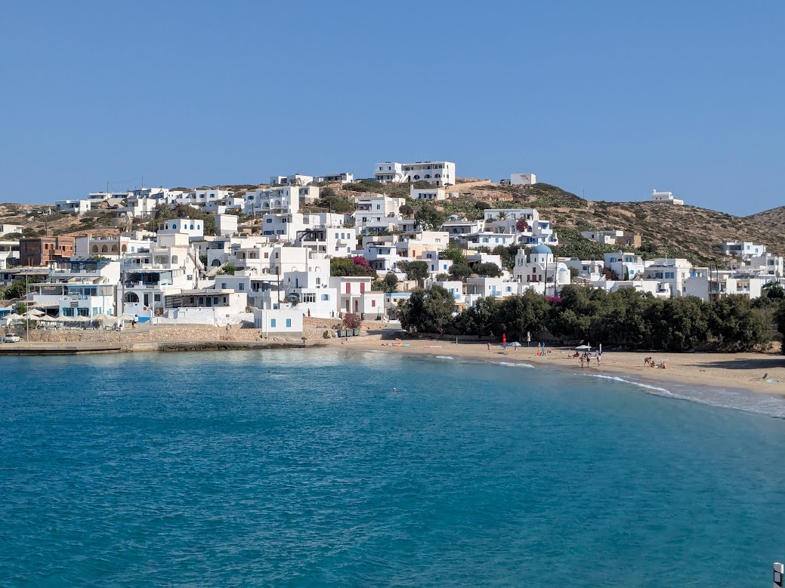
Stavros is the main beach on Donousa, right in front of the village. Shallow water, a few tavernas nearby, and everything you need for a lazy day. Good for families or just doing nothing.
Italida, Koufonisia
Lesser Cyclades
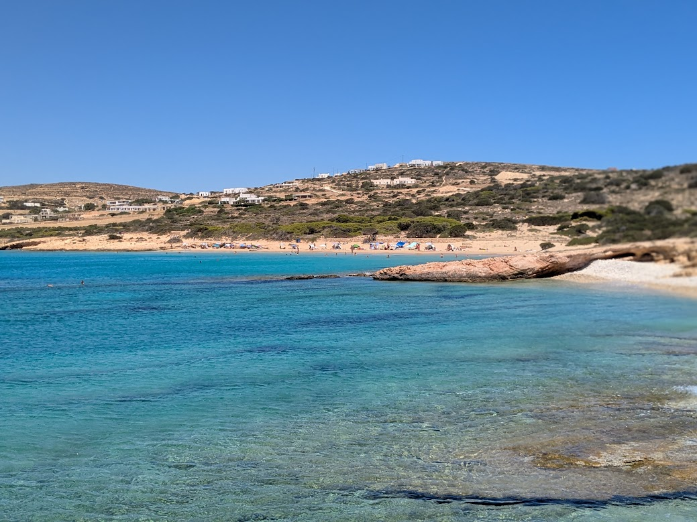
Italida on Koufonisia is the kind of beach you stay at all day. Turquoise water, soft sand, and somehow still relaxed even when people show up.
Τι έμαθα περπατώντας στον κόσμο
Λένα Διβάνη
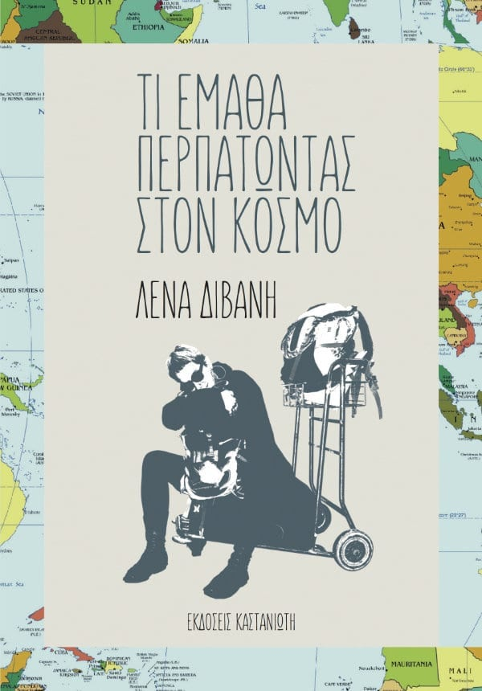
Στο «Τι έμαθα περπατώντας στον κόσμο», η Λένα Διβάνη μάς προσφέρει ένα απολαυστικό ταξιδιωτικό ημερολόγιο γεμάτο εμπειρίες, ανθρώπους και μαθήματα ζωής από δεκάδες χώρες—από τη Βενεζουέλα και την Κούβα έως την Αιθιοπία και τη Νέα Ζηλανδία—δίνοντας φωνή στις πιο απρόβλεπτες, αστείες, συγκινητικές ή και σκοτεινές στιγμές που έζησε ως περιπατήτρια του κόσμου.
Ιστορία
Τρεις συνοπτικές ιστορίες για τις μεγάλες δυνάμεις
* Paul Boyer - Θυράθεν: Ιστορία των Ηνωμένων Πολιτειών - Μια σύντομη εισαγωγή
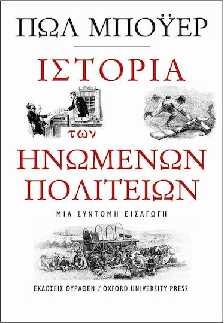
* Linda Jaivin - Σύντομη ιστορία της Κίνας
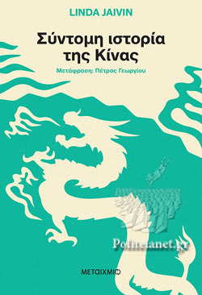
* Mark Galeotti - Μικρή ιστορία της Ρωσίας από τον Πούτιν
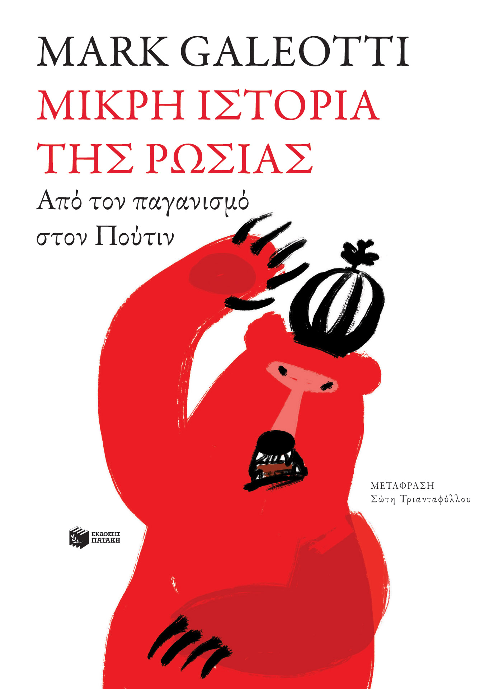
Βαρδούσια Όρη
Θέα από την πλατεία της Αρτοτίνας
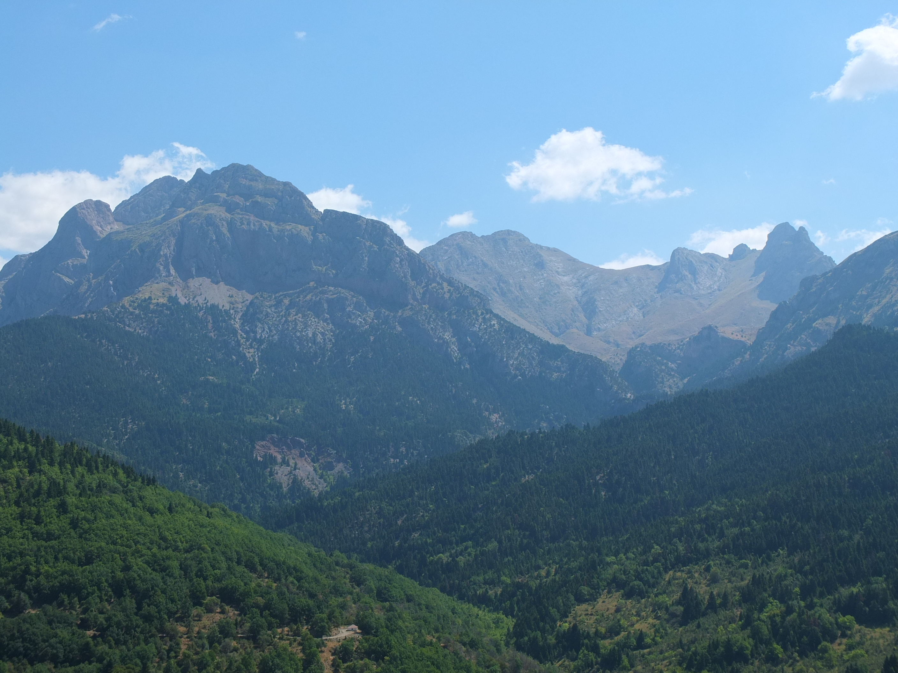
Διακρίνονται οι δυτικές κορυφές των Βαρδουσίων, Χωμίριανη, Αλογόραχη και Σούφλες.
Aνάβαση στα Βαρδούσια Όρη - Μια μοναδική περιπέτεια στη ΦύσηOmarchy
Μια μινιμαλιστική, γρήγορη και όμορφη εμπειρία Linux
Ένα πολύ ελαφρύ και όμορφο λειτουργικό σύστημα βασισμένο στο Arch Linux. Το εγκατέστησα σε τρία Lenovo Thinkpad!
An opinionated Arch + Hyprland Setup by DHHSilo
Μια καθηλωτική τηλεοπτική σειρά επιστημονικής φαντασίας

Μια αγωνιώδης μεταφορά των μυθιστορημάτων του Hugh Howey για τους κατοίκους ενός σφραγισμένου υπόγειου σιλό. Και οι δύο σεζόν προσφέρουν μυστήριο, πολιτική ίντριγκα και δυνατές ερμηνείες.
Wikipedia: SiloThe Worst Person in the World

A contemporary Norwegian romantic comedy-drama directed by Joachim Trier.
IMDB: The Worst Person in the WorldStrasbourg, Alsace
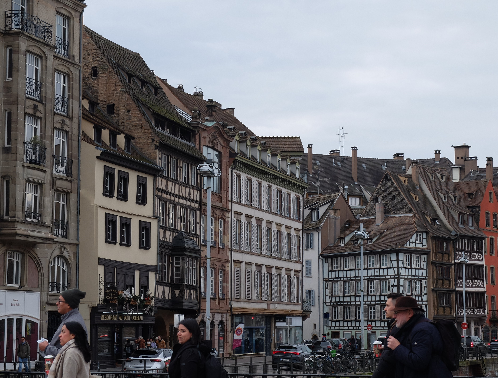
Picturesque canals, the Grande Île UNESCO site and a beautiful mix of French and German influences.
Heidelberg, Germany
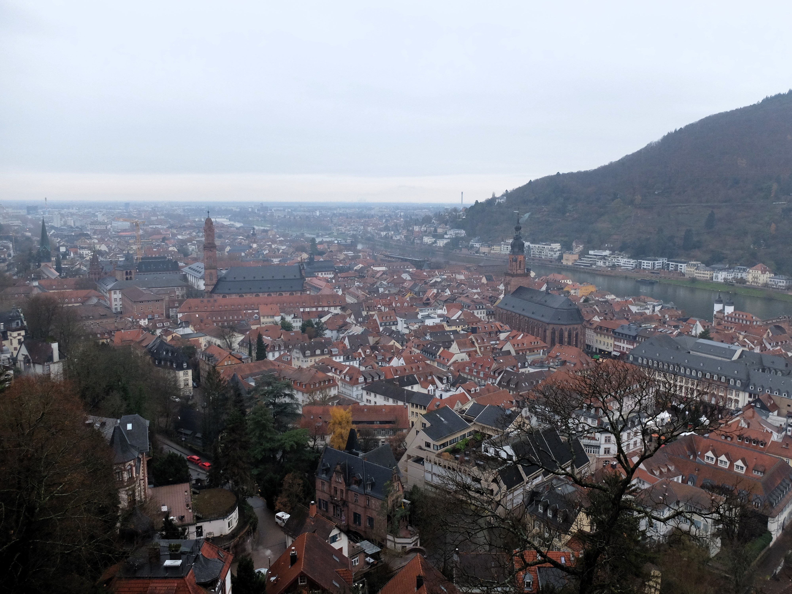
Famed for its castle ruins, river views and historic university—an ideal romantic getaway.
Triberg, Germany
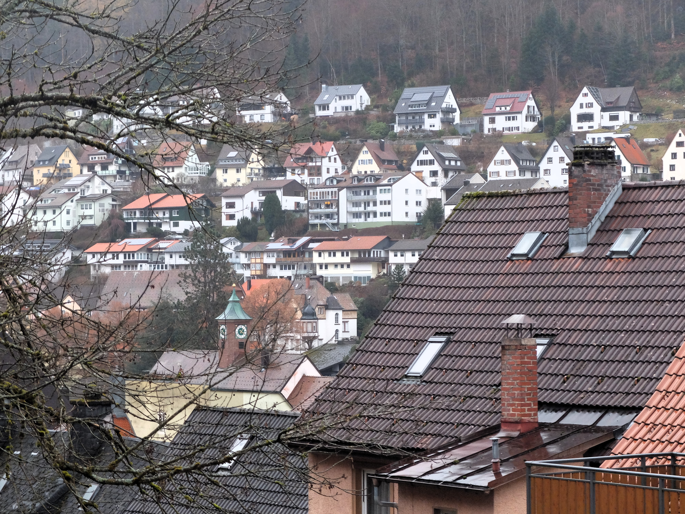
Home to some of Germany's highest waterfalls and the heart of Black Forest charm.
Holland-Smith John, Ο Θάνατος του Αρχαίου Κόσμου
Μια ιστορία της ύστερης αρχαιότητας
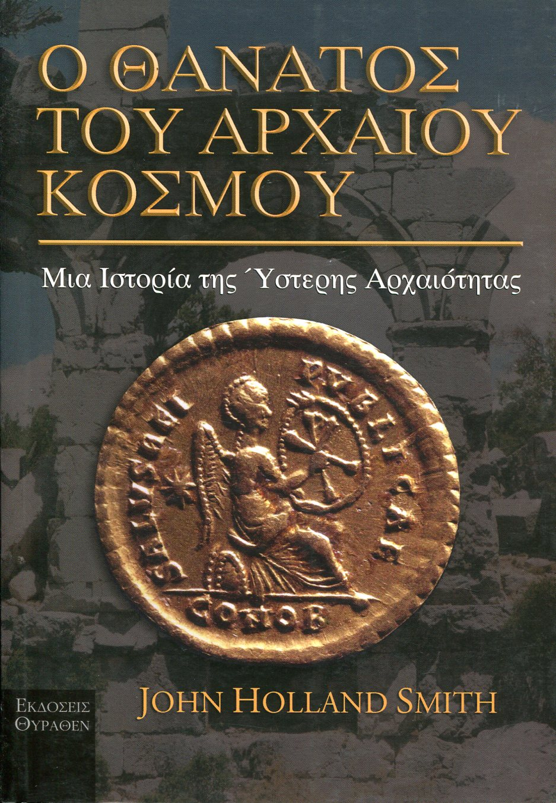
Μία ιστοριογραφική ανάλυση της ύστερης αρχαιότητας που ερευνά τη σταδιακή διάλυση του κλασικού πολιτισμού. Το έργο απεικονίζει τα δράματα της εποχής: τους θρησκευτικούς διωγμούς κατά των εθνικών, τη καταστροφή ιστορικών μνημείων και καλλιτεχνικών θησαυρών από χριστιανούς μοναχούς και στρατό στη Μέση Ανατολή και τον Μεσογειακό χώρο και τον ερχομό των βαρβάρων στα Βαλκάνια και την κατάλυση του Δυτικού Ρωμαικού κράτους.
Nanjing, Shanghai
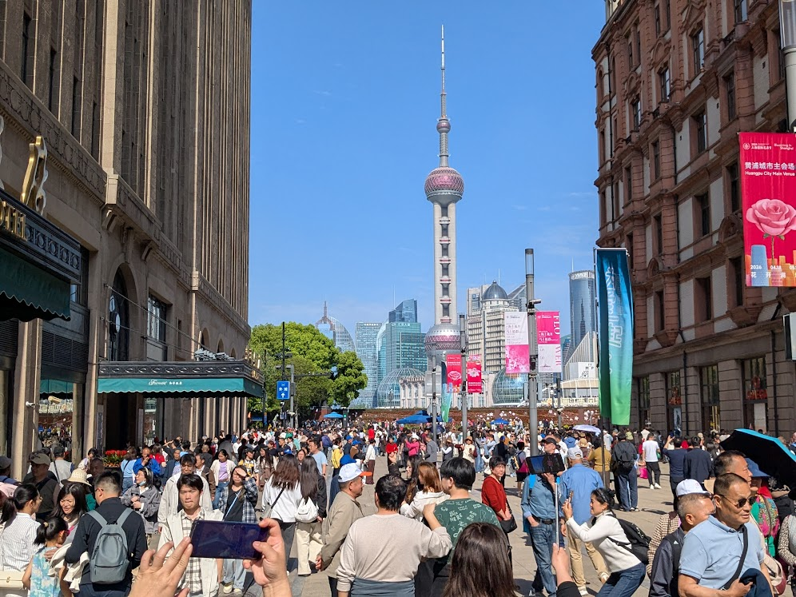
Nanjing Road in Shanghai is chaos in the best way. Neon signs, huge crowds, department stores, and street food. A good place to just walk and absorb how massive the city feels.
Αρχαία Κόρινθος
Πελοπόννησος
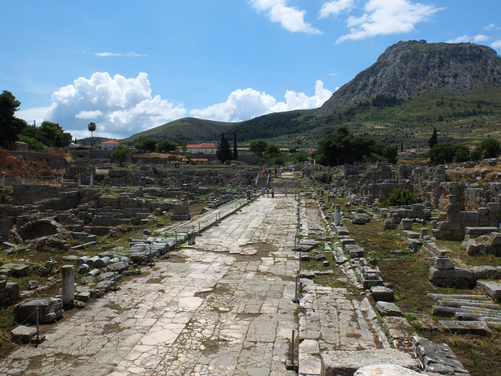
Περπατώντας στη Οδό Λεχαίου, τον πλακόστρωτο δρόμο που κάποτε συνέδεε την αρχαία πόλη με το λιμάνι της. Στο βάθος δεσπόζει η Ακροκόρινθος. Η Κόρινθος ήταν από τις πιο ισχυρές πόλεις της αρχαίας Ελλάδας.
Wikipedia: Αρχαία ΚόρινθοςΟ Βασιλιάς Πίθηκος
Γου Τσενγκ Εν
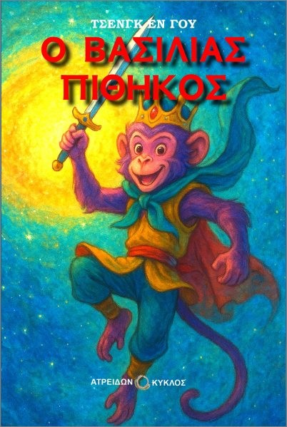
Το κλασικό αυτό μυθιστόρημα γράφτηκε το 1570 από τον Γου Τσενγκ Εν και αφηγείται το περιπετειώδες οδοιπορικό του μοναχού Σαντζάνγκ και των τριών μαθητών του — του ατρόμητου Πίθηκου, του άπληστου Χοίρου και του λιγομίλητου Άμμου — από την Κίνα στην Ινδία τον 7ο αιώνα, στην εποχή της δυναστείας των Τανγκ. Σκοπός του ταξιδιού είναι να πάρουν τις βουδικές γραφές, ενώ στο δρόμο συναντούν δαίμονες, δράκους και τέρατα. Ο Πίθηκος, μαζί με τους συντρόφους του, χρησιμοποιεί χιλιάδες μαγικά τεχνάσματα για να προστατεύσει τον δάσκαλό του.
Ατρεΐδων ΚύκλοςPeter Frankopan - Οι Δρόμοι του Μεταξιού
Μια νέα ιστορία του κόσμου

Το πήρα πρόσφατα και δεν βλέπω την ώρα να το ανοίξω. Ο Frankopan μεταφέρει το κέντρο της παγκόσμιας ιστορίας πιο ανατολικά, μακριά από τα συνηθισμένα ευρωκεντρικά αφηγήματα, και δείχνει πώς η ζώνη ανάμεσα σε Κίνα και Κωνσταντινούπολη ήταν για αιώνες η πραγματική μηχανή του κόσμου.
Εκδόσεις Αλεξάνδρεια
{kind=link}
{kind=link}
{kind=link}
{kind=link}
{kind=link}
{kind=link}
{kind=link}
{kind=link}
{kind=link}
{kind=link}
{kind=link}
{kind=link}
{kind=link}
{kind=link}
{kind=link}
{kind=link}
{kind=link}
{kind=link}
{kind=link}
{kind=link}
{kind=link}
{kind=link}
{kind=link}
{kind=link}
{kind=link}
{kind=link}
{kind=link}
{kind=link}
{kind=link}
{kind=link}